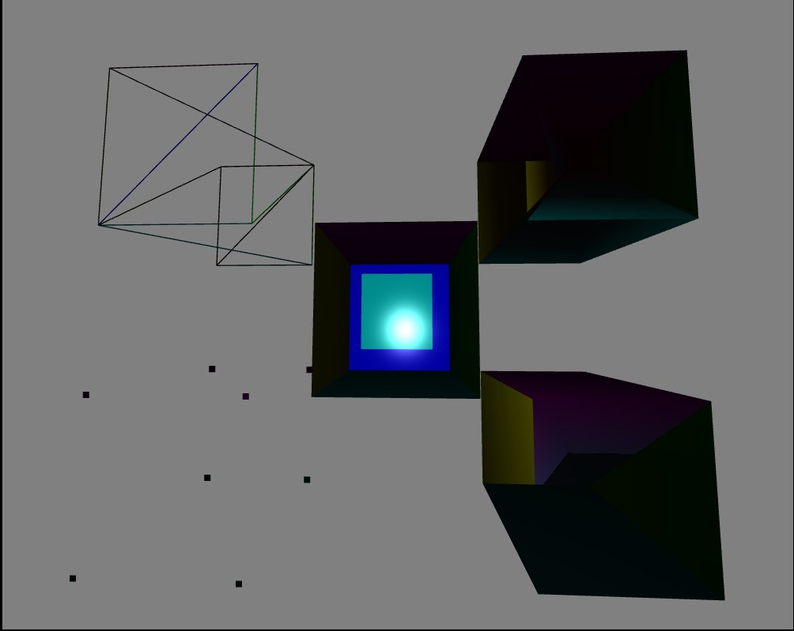
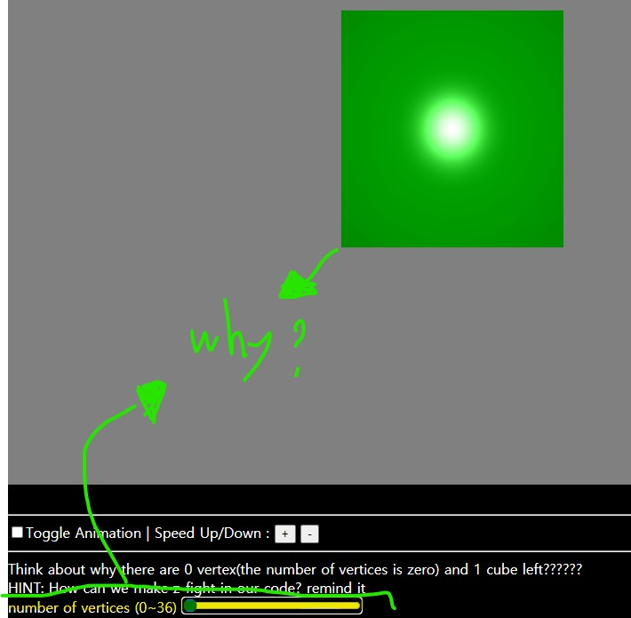
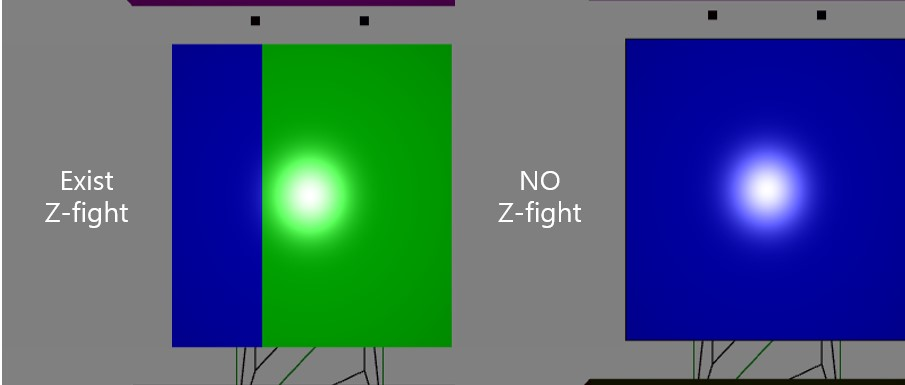
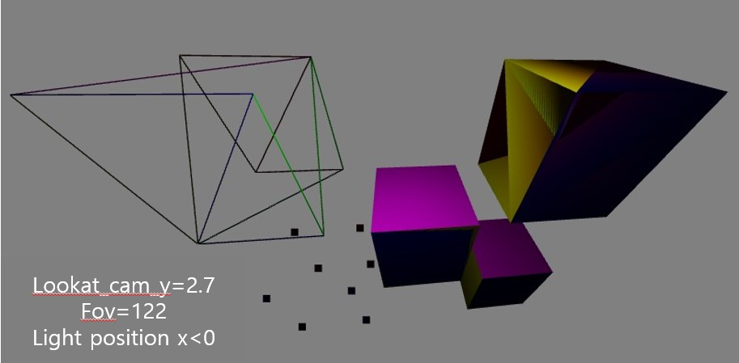

Webgl - Final Project
Toggle Animation |
Speed Up/Down :
+
-
WebGL ALL(translate , primitive assembly , shading , depth test , lookat, FOV)
welcome. This is a general lecture on Webgl.
We're going to take and explain topic with great visual impact.
Each topic is explained, followed by summary quiz. Let's start!

Primitive Assembly
There are three types of primitive assemblies. They are points, lines and triangles.
In My webgl course, you can view and compare 5 current points, line , triangle , triangle fan and triangle strip at the same time.
Based on the vertex, the point is marked at the corresponding vertex position, and the point size has been adjusted to a visible size.
A line is a line composed of two vertices, and line strip and line loop functions exist.
The line itself is a property that connects two different vertices,
and the line strip continuously overlaps one vertex, and in the line loop, the last vertex meets the first vertex again to form a loop.
The three-dimensional line you can see here is a general line.
Triangle is also divided into 3 parts. They are Triangles , triangle_fan , triangle_strip .
Triangles connect 3 different points, triangle_fan centers on one point,
and this point becomes a part of all vertices of the remaining triangles.
In triangle_strip, vertices are continuously overlapped like a line strip and triangles are connected.
Quiz1: Check the toggle animation checkbox. For 5 three-dimensional figures,
can you tell which draw_mode was used among the above 5 modes?
Probably, I think, it's not easy yet. Let's keep learning!
Translate
The next topic is translate! The key to Translate is the movement of points, not movement of figures. The keyword of shifting the origin point is at the heart of this topic. So, when translate and rotate are used together, the plane itself rotates after the origin point is moved. Remind yourself of what you learned in postscript. Check the toggle animation checkbox. How are the currently rotating 5 cubes made? The answer is translate. With the object in the center, I went through 4 translates to complete the shape of 5 cubes. At this point, be careful when performing the next translate because once the translate is executed, the changed position is considered the origin point!! (The current position should be the origin and computed.) It can be turned on and off via . Also, the original size cube in the center created a smaller size cube(inside). I did it with the scale function, try spinning the rotation on/off through the button below
spinning smallest_center_cube off/on :
on
off
Think about why there are 0 vertex(the number of vertices is zero) and 1 cube left??????
HINT: How can we make z-fight in our code? remind it
number of vertices (0~36)
Translate1 off/on :
on
off
Translate2 off/on :
on
off
Translate3 off/on :
on
off
Translate4 off/on :
on
off
Quiz2: Adjust the number of vertices. Can you see the difference?? Number of vertices controls the number of vertices so that only a certain number of vertices are left before rendering. Then, even if you make a cube with 36 vertices, some vertices will be ignored. At this time, do you know why the cube remains in the middle even though the number of vertices is set to 0? The next topic will explain why.

Depth test
The next topic is depth test. So far, no z-fighting is taking place. Because I didn't turn on depth test. Z-fighting is a phenomenon that occurs because different objects have the same z depth value and different pictures are drawn at the same time at the depth location where one should be drawn. Shall we turn on the depth test? You can clearly see the z-fighting phenomenon in the center cube. At this time, the depth test is where the objects to be drawn continue to pile up, and at this time, it plays a role in distinguishing the relationship between the objects after standing. If you turn on the depth test, you should see only one cube face in the center, but a face with two colors is visible. It looks like both sides are visible at the same time. This is proof that z-fighting is here now.  At this time, try to adjust the f and u values. In order to eliminate the z-fighting phenomenon, you need to adjust the f and u values (called polygon offset) to divide the precedence relationship at a specific z position where z-fighting occurs. In this case, this relationship is not reflected in the overall depth.
DEPTH_TEST
#############YOUR CHALLENGE: choose perfect f,u to remove all z-fight:##############
polygonOffset (factor, units) :
F
U
Set
IF z-fight of the cube(one of them(in edge side)) still remain, think about reason why???
HINT: think about cube with draw_mode TRIANGLE_FAN
This is the answer to the first quiz. Previously, it was difficult to distinguish objects because the depth test was not turned on, so I could not see the appearance, but now I think I can distinguish strips and lines by looking at the appearance of objects through the depth test. This is the answer to the second quiz. In order for Z-fighting to happen, you basically have to put two objects on top of each other in about the same position. This will cause them to fight each other at the z depth location. So, since two cubes are drawn, this phenomenon occurs because there is a cube that is normally affected by the number of vertices and a cube that is not affected by the number of vertices. #Quiz3 : YOUR CHALLENGE: choose perfect f,u to remove all z-fight IF z-fight of the cube(one of them(in edge side)) still remain, think about reason why??? HINT: think about cube with draw_mode TRIANGLE_FAN
lookat && FOV(field of view)
The next topic is lookat and field of view (FOV). The original object lies at position (0,0,0). And the camera looking at the object is displayed as if it is inside the object, so the camera is not positioned properly. So we have to set the origin (0,0,0) as the position of the camera, and move the object back/forward that much so that the camera at the origin is facing the object! The lookat function has important parameters such as eye, center, and up. First we need to specify the up vector. This is a normal vector for the camera!! For convenience, I will set it to [0,1,0]. (For the direction of the camera) And the center can be expressed as a vector where the object is located. Eye is where the camera is!! Now try pressing the auto and + - buttons in the place called move your cam. The position of the camera will change (in the y-axis direction). 
FOV :
move your cam until -3.0 < cam_y < 3.0:
+
-
auto +
auto -
And FOV, short for field of view, adjusts the focal length of the camera to determine whether the camera sees a wide or narrow area. FOV is currently adjusted from 0 to 170. Try it yourself!
shading
The last topic is light position in shading. We learned about one of the lighting models, the phong model. It is divided into diffuse light, specular light and ambient light. Cosine value is used when calculating diffuse light. (The overall appearance is structrued.) The specular light changes as it moves relative to the object while only certain parts are very bright. These three lights can be expressed in RGB. Currently, we have created a button for what happens when you adjust the position of all lights (without dividing each light separately).
Light Position X,Y,Z (-4 ~ +4)
Quiz4: Try adjusting each bar for the light position x y z. If you go in one direction, the light moves closer to the object, and if you go in the opposite direction, the light moves away? no. Since this light moves according to the coordinates as if we put the camera or object on the coordinates, only when the object moves in the direction the light approaches the light and the light moves away from the rest. Check it out for yourself!
Reference
I referenced the code of Professor Hwan-Yong Lee's 12. Shading lecture.
https://github.com/hwan-ajou/webgl-1.0/tree/main/T12_Shading